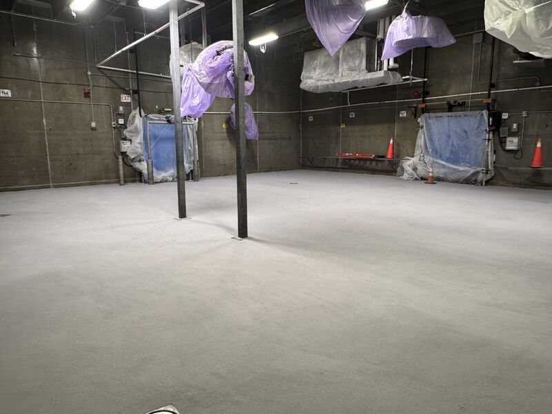
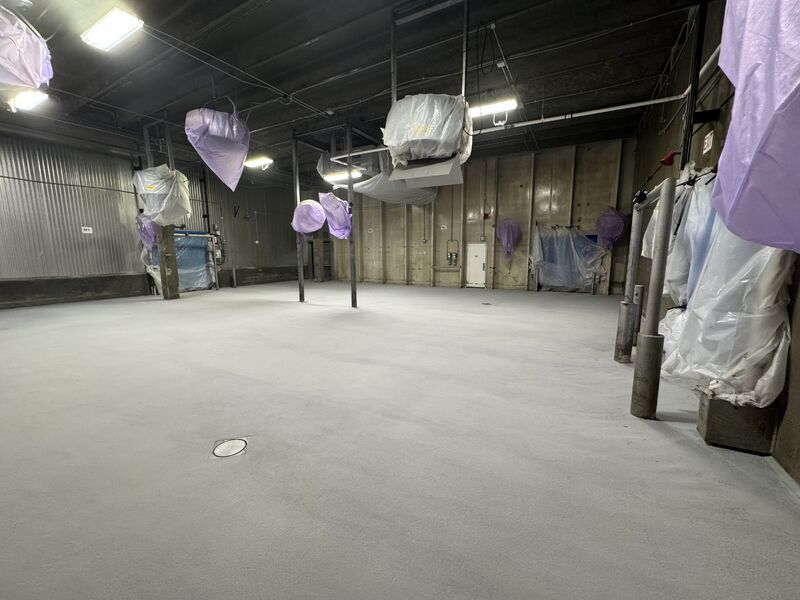
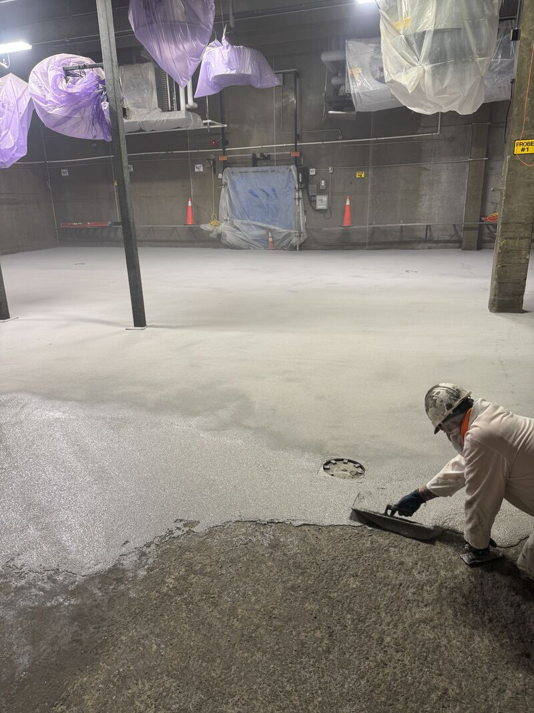
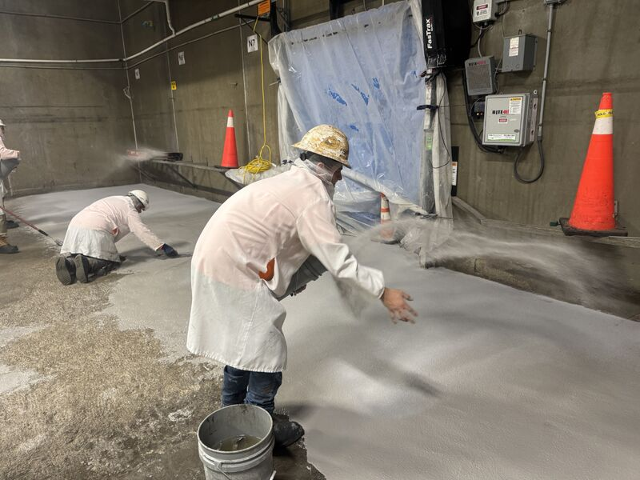

Production ran late, so our four-day window turned into three. At the same time, we had two plants down the road from each other, with two blast freezer and cooler floors moving at once. Both were over 3,500 square feet.

This was the first one, start to finish. Jackhammer. Scarify. Slope and deepfill. Re-prep the patches. Install SaniCrete STX, a 3/8" stainless steel reinforced cementitious urethane. Clean the excess broadcast. Run cant cove throughout.
Start With What Failed
The existing coating came off, all of it. That matters. A freezer floor is not the place to trust a failed system as the base for the next one. The slab had to be opened up, roughed up, repaired, and pitched so water went where it belonged.
Bad concrete spots were filled with SaniBulk. Then the fresh SaniBulk had to be prepped again before anything went over it. Fast repair material still needs proper profile. Skipping that step would only move the failure to a different layer.



Why STX Fits the Room
Blast freezer and cooler floors see thermal shock, washdown, forklift traffic, and sub-zero conditions. That is the job for stainless steel reinforced cementitious urethane. The room also needs cant cove because square corners give bacteria a place to hide and hoses something to fight.
The crew worked 18-hour days. Some ran nights. The plant never lost a day of production.
Freezer Floor Been on Your List?
If the floor has been waiting because the shutdown looks too tight, we can help build the repair plan around the hours the plant can actually give up.